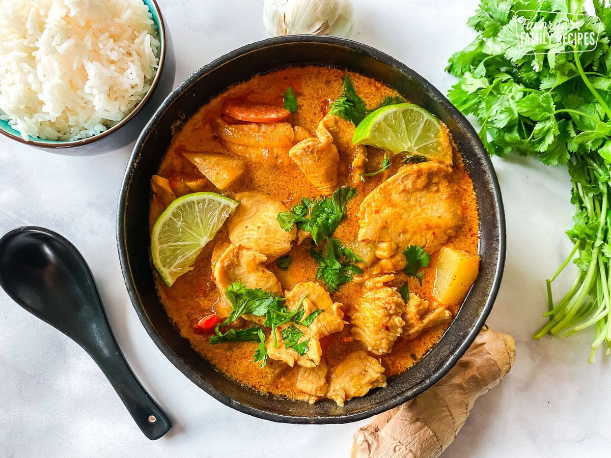

Gulai adalah salah satu masakan khas Indonesia yang memiliki cita rasa gurih, pedas, dan kaya rempah. Hidangan ini berasal dari Sumatera dan dipengaruhi oleh budaya kuliner Melayu serta India.
Gulai dibuat dengan bahan utama seperti daging ayam, sapi, kambing, ikan, atau sayuran yang dimasak dalam kuah santan kental. Bumbu gulai terdiri dari campuran rempah-rempah seperti kunyit, jahe, lengkuas, ketumbar, jintan, cabai, dan serai yang menghasilkan aroma harum serta rasa yang khas.
Gulai biasanya disajikan bersama nasi hangat dan sering dijumpai pada acara keluarga, perayaan adat, maupun di rumah makan Padang. Variasi gulai sangat beragam di berbagai daerah di Indonesia.